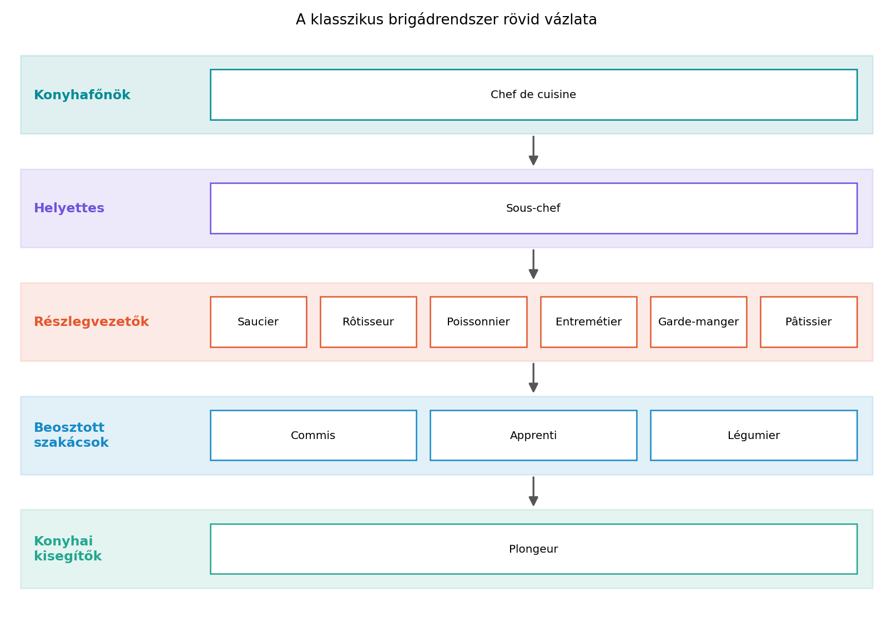

Egy francia bisztróban dolgozó szakács naponta találkozik olyan kifejezésekkel, mint sous-chef, mirepoix, déglacer vagy bouquet garni. Ha ezeket érti, gyorsabban olvassa a recepteket, és pontosabban dolgozik. A francia konyha nemcsak egy ország ételeit jelenti: ez a nemzetközi vendéglátás közös szakmai nyelve. A francia rendszerből származik a konyhai brigád beosztása, a mártások rendszere, a párolás és a pecsenyelé készítésének számos fogása. Aki szakácsként szeretne boldogulni, annak ismernie kell a francia alapfogalmakat és legalább néhány klasszikus ételt.
Összevetés a szomszédos konyhákkal. Az előző alfejezet közép-európai táblázatához képest a francia konyha mártás- és vajközpontú: a bécsi szelet francia megfelelője az escalope panée, a pörköltalap helyén a ragoût és a fricassée áll, a tejföl helyett crème fraîche kerül az ételbe, a sertészsír helyett pedig vaj és tejszín adja a gazdagságot. A közös gyökér a tartósítás és a lassú főzés; a különbség a mártások szerepében van.
Képzelj el egy régi lyoni bisztrót. Reggel a konyhafőnök kiosztja a feladatokat: a saucier a mártásokat készíti, a rôtisseur a sülteket, a pâtissier a desszerteket. A commis zöldséget tisztít, mindent előkészít a mise en place szerint. Este a vendégek borban párolt marhát, tejszínes tojáslepényt és égetett krémet rendelnek. Egyetlen étterem, de mögötte egy egész rendszer működik: a konyhafőnöktől a mosogatóig. Ezt a rendszert a francia konyha formálta modern szakmává.

A fenti ábra csak a klasszikus felosztást mutatja. Kis konyhában egy szakács több posztot is ellát.
A francia konyha hosszú idő alatt több irányzatra tagolódott. A haute cuisine (magas konyha) a 17–19. században kialakult, Carême és Escoffier által rendszerezett, nagyon kidolgozott, sok fogásos, fényűző éttermi konyhát jelenti (ellenőrizendő: gasztronómiatörténeti forrás). Sok vajjal, tejszínnel, húsalaplével és mártással dolgozott. A fogások bőségesek és rendkívül összetettek voltak.
Definíció. A haute cuisine olyan klasszikus francia éttermi konyha, amely a technikai tökéletességre, a mártások rétegzésére, a látványos tálalásra és a drága alapanyagokra épül.
A nouvelle cuisine (új konyha) az 1960–1970-es években jelentkező irányzat. Lényege: kevesebb vaj és liszt, rövidebb hőkezelés, friss, piaci alapanyagok, kisebb adagok, nagy hangsúly a tányérképen. A mártásokat gyakran redukcióval, nem liszttel sűrítik.
Definíció. A nouvelle cuisine a francia konyha megújító irányzata, amely a könnyedséget, az alapanyag természetes ízét és a rövid hőkezelést helyezi előtérbe a nehéz, lisztes-vajas mártásokkal szemben.
A bistro (bisztro) kisméretű, kötetlen francia vendéglő. Házias, gyorsan tálalható ételeket kínál: hagymalevest, rántottát, párolt marhát, burgonyás fogásokat. Az éttermi konyha mellett ez a mindennapi francia konyha alapja.
Definíció. A bistro olyan kisebb francia vendéglő, ahol egyszerű, hagyományos, jól lakható ételeket adnak, általában kötetlen légkörben.
Auguste Escoffier (1846–1935, ellenőrizendő: pontos évszám) a klasszikus francia konyha rendszerezője. Leegyszerűsítette a túl bonyolult ételeket, bevezette a konyhai részlegek pontos felosztását, és megfogalmazta, hogy a konyha akkor működik jól, ha minden szakácsnak világos feladata van.
Szabály. A klasszikus brigádrendszerben a konyhafőnök (chef de cuisine) irányít, a helyettese (sous-chef) a napi munkát szervezi. A részlegvezetők (chefs de partie) egy-egy területért felelnek:
Alattuk dolgoznak a beosztott szakácsok (commis), a tanulók (apprenti), a zöldségszakács (légumier) és a konyhai kisegítők (plongeur). A mai konyhákban a posztokat gyakran összevonják, de a felelősségi elv ugyanaz marad. Ezt a részletes munka- és reszortbeosztást a későbbi A konyhai személyzet hierarchiája, reszortok és munkarend alfejezet dolgozza fel.
A francia konyha nem egységes: minden tájnak megvan a maga alapanyaga és fogása.
| Táj | Jellemző alapanyagok | Jellegzetes étel vagy technika |
|---|---|---|
| Provence | olívaolaj, paradicsom, padlizsán, cukkini, paprika, fokhagyma, fűszernövények | ratatouille, bouillabaisse, tapenade |
| Burgundia | marha, vörösbor, mustár, gyöngyhagyma, gomba | bœuf bourguignon, coq au vin |
| Normandia | vaj, tejszín, sajt, alma, tengeri hal | tejszínes kagyló, almás sütemények |
| Elzász | sertés, káposzta, szalonna, fehérbor | choucroute garnie, sertéskocsonya |
| Lotaringia | tej, tojás, liszt, füstölt szalonna | quiche lorraine |
Lotaringia Elzász szomszédja, ezért a gyakorlatban sok francia étlapon együtt jelennek meg.
A bœuf bourguignon marhahúsból, vörösborból, szalonnából, gyöngyhagymából, gombából és sárgarépából készülő, lassú párolással omlósra főzött ragu. A húst először megpirítjuk, majd a barnamártás elve szerint liszttel, borral és alaplével összefőzzük. Itt használjuk a Barnamártások és pecsenyelevek alfejezetben tanult deglazírozást és barnamártás-alapot.
A coq au vin hasonló elvű étel, de hagyományosan idősebb kakasból készül. A kakast vörösborban, szalonnával, gombával és gyöngyhagymával pároljuk. A kakas húsa rostosabb, ezért hosszabb nedves hőkezelést igényel, mint egy fiatal csirke.
A ratatouille padlizsánból, cukkiniből, paprikából, paradicsomból, vöröshagymából, fokhagymából és olívaolajból készül. A zöldségeket külön-külön vagy fokozatosan pároljuk, hogy mindegyik megtartsa az állagát. Nem pürésítjük, csak sűrű, darabos zöldséges ételt kapunk.
A quiche lorraine omlós tésztából készült lepény, amelyet tojás, tejszín és füstölt szalonna keverékével töltünk meg. A hagyományos változat nem tartalmaz sajtot, de sok helyen gruyère-rel vagy ementálival is készítik; ez esetben a tejallergén mellett a sajt összetétele is jelölendő.
A crème brûlée (égetett krém) tojássárgából, tejszínből, cukorból és vaníliából készült, vízfürdőben hőkezelt desszert. A kihűlt krém tetejét vékony cukorréteggel megszórjuk, és cukrászfáklyával karamellizáljuk. A fáklyahasználat miatt ez a desszert külön munkabiztonsági figyelmet kér.
A francia konyha szavai a mai napig a nemzetközi konyhanyelv alapjai.
| Szakkifejezés | Jelentés | Példa a konyhán |
|---|---|---|
| mise en place | minden előkészítés a helyén, a főzés megkezdése előtt | hús kockázva, zöldség aprítva, lábas a tűzhelyen |
| mirepoix | durvára vágott vöröshagyma, sárgarépa, zeller keveréke | barna alapléhez, mártáshoz |
| bouquet garni | petrezselyem, kakukkfű, babér összekötött csokra | főzőlébe, raguba, levesbe |
| roux | vaj és liszt hőkezelt keveréke | fehér, szőke, barna rántás |
| déglacer | az edényben leragadt pörkanyag feloldása folyadékkal | pecsenyeléhez, bœuf bourguignonhoz |
| monter au beurre | hideg vajjal való dúsítás, mártás fényesítése | pecsenyeléhez, húsmártáshoz |
| julienne | vékony, gyufaszálszerű csíkok | zöldségköret vagy levesbetét |
| brunoise | apró, szabályos kockák | mirepoix finomabb változata |
| chiffonnade | vékonyra vágott levélzöldség-csíkok | bazsalikom, saláta |
| au gratin | sajttal, morzsával, pirított tetejű étel | burgonyapüré teteje sütőben |
Továbbvitt eredmény. Ezeket a francia szakkifejezéseket az A mediterrán konyha: olasz, spanyol, görög alfejezetben újra használjuk, mert a francia szakkifejezések a nemzetközi éttermi szaknyelv részei: roux, mirepoix, déglacer, julienne, brunoise, mise en place.
A technológiai lap 10 adagra adja meg az anyagokat. Ha csak 4 adagot kell készíteni, a mennyiségeket egyenes arányossággal számoljuk át.
Számítás.
Adott: 10 adaghoz marhalábszár
,
vörösbor
,
szalonna
,
sárgarépa
.
Keresett: a mennyiségek 4 adagra.
A szorzószám:
Behelyettesítések:
Ellenőrzés: 4 adag kevesebb, mint 10 adag, ezért minden mennyiségnek kisebbnek kell lennie. Az arány mindenütt , így a számítás helyes. Ezt a módszert az Anyaghányad-számítás és receptúra-átszámítás alfejezetben részletesen tovább gyakoroljuk.
Adagszám: 10 adag
Adagsúly: kb.
(tanulási érték; az üzemi receptúra a mérvadó).
Anyaghányad-táblázat
| Nyersanyag | Mennyiség 10 adagra | Megjegyzés |
|---|---|---|
| marhalábszár vagy nyak | bruttó, kockázva kb. | |
| füstölt húsos szalonna | felcsíkozva | |
| sárgarépa | tisztítva, karikázva vagy kockázva | |
| vöröshagyma | tisztítva, finom kockákra | |
| gyöngyhagyma | tisztítva, egészben | |
| csiperkegomba | tisztítva, negyedelve | |
| vörösbor | allergén: szulfit | |
| barna alaplé vagy húsleves | az Alaplevek, kivonatok és pecsenyelevek szerint | |
| finomliszt | allergén: glutént tartalmazó gabonafélék | |
| paradicsompüré | – | |
| fokhagyma | tisztítva, zúzva | |
| bouquet garni | csokor | petrezselyem, kakukkfű, babér |
| vaj | allergén: tej | |
| só | ízlés szerint | |
| bors | frissen őrölt |
Allergén. A bœuf bourguignon tipikus allergénjei: glutént tartalmazó gabonafélék (finomliszt), tej (vaj), szulfit (vörösbor). Ha az alaplé zellert is tartalmaz, a zellert is fel kell tüntetni. A vendéget pontosan tájékoztasd, és az allergiás adagot elkülönített eszközökkel készítsd.
Higiénia. A nyers marhahúst a zöldségektől elkülönítve tárold. A nyers húsos tálat, vágódeszkát és kést használat után azonnal fertőtlenítő mosogatással tisztítsd. A párolás után a ragu maghőmérséklete legalább legyen (ellenőrizendő: NÉBIH-útmutató / HACCP-terv). A kész ételt felett tartsd, vagy gyorsan hűtsd le.
Eszközök és gépek: sütő vagy tűzhely, öntöttvas lábas, keverőlapát, maghőmérő, vágódeszkák, szűrő, hűtő.
Előkészítés
Elkészítés
Kritikus pont. A hőkezelés CCP: a párolás végén mérj maghőmérsékletet a legvastagabb húsdarabban, legalább (ellenőrizendő). A készentartás legalább legyen. A maradékot gyorsan, a HACCP-tervben rögzített időn belül hűtsd le: a főzés végétől 2 órán belül 20 °C alá, további 4 órán belül 5 °C alá (tanulási érték, ellenőrizendő: NÉBIH-útmutató / HACCP-terv). A hűtés alatt a ragut lapos edénybe tedd, és keverd.
Készentartás és tálalás: tálald friss petrezselyemmel, párolt burgonyával vagy vajas tésztával. A mártás sötétbarna, selymes, nem lisztes.
Minőségi követelmények: a hús omlós, villával könnyen szétnyílik; a mártás sötétbarna, fényes, borban gazdag; a gyöngyhagyma és gomba egyben marad.
Tipikus hibák és javításuk: ha a hús kemény, a párolási idő rövid volt; ha a mártás lisztes, a rántást nem pirították elég ideig vagy nem főtt ki; ha keserű, a rántás megégett.
Változatok: coq au vin esetén a marha helyett kakasdarabokat használj, a párolási idő a kakas korától függően hosszabb lehet.
Adagszám: 10 db
Adagsúly: kb.
.
Anyaghányad-táblázat
| Nyersanyag | Mennyiség 10 adagra | Megjegyzés |
|---|---|---|
| tejszín | allergén: tej | |
| tojássárga | db, kb. (kb. 18 g/db; ellenőrizendő) | allergén: tojás |
| kristálycukor | a krémhez | |
| vaníliarúd | db | kikapart magok |
| barna cukor | a karamellréteghez |
Allergén. A crème brûlée tej- és tojásallergént tartalmaz. Tejallergiás vendégnek nem adható; tojásallergiás vendégnek sem. A karamellizálás során keresztszennyeződés csak akkor jön létre, ha más allergént is teszünk a közelbe.
Higiénia. A tojást csak közvetlenül felhasználás előtt üsd fel, és a héjától elkülönítve dolgozz. A nyers tojásos keverék hőkezelése előtt hűtve tárold. A hőkezelés után a maghőmérséklet legalább legyen (ellenőrizendő), majd a krémet gyorsan hűtsd.
Eszközök és gépek: lábas, habverő, szűrő, 10 db kerámia- vagy üvegtál, mély tepsi, sütő, maghőmérő, cukrászfáklya.
Biztonsági korlát. A cukrászfáklyát csak tankonyhán vagy oktatói felügyelettel használd. Otthon csak a gyártói utasítás szerint, éghető anyagtól távol, gyújtóforrás-közelben fokozottan óvatosan. A fáklyát ne irányítsd emberre, és a karamellizálás után hagyd kihűlni.
A karamellizálás három lépése: (1) a kihűlt krémre vékony, egyenletes barnacukor-réteg kerül; (2) a tálka hőálló felületen áll, a fáklyát ferdén, a gyártói utasítás szerinti távolságban tartod, és körkörösen mozgatod; (3) vékony, üveges, borostyánszínű kéreg lesz.
Az alsó sor három hibája közül kettő minőségi (vastag réteg, túl közeli láng: keserű, égett kéreg), a harmadik tűzveszély: papír, szalvéta vagy műanyag nem lehet a láng közelében. A HTML-kiadásban a lépések és a hibák egyenként léptethetők.
Előkészítés
Elkészítés
Kritikus pont. A tojásos tejszín hőkezelése CCP: a maghőmérséklet legalább (ellenőrizendő). A hűtést gyorsan végezd, ne hagyd a krémet szobahőmérsékleten. A tetejére kerülő cukorréteg csak közvetlenül tálalás előtt készüljön.
Minőségi követelmények: a krém sárgás, selymes, rengő; a karamell roppanós, vékony; a vanília illata érezhető.
Tipikus hibák és javításuk: ha a krém szemcsés, kicsapódott, savót enged, túl magas sütőhőn vagy túl hosszan sütötték, vagy hiányzott a vízfürdő; ha a közepe folyós marad, rövid volt a sütés vagy alacsony a hő – süsd tovább, amíg a maghőmérséklet eléri a 75 °C-ot (ellenőrizendő); ha a karamell keserű, megégett.
A francia ételeknél az érzékszervi ellenőrzés mellett a hőmérséklet a legfontosabb. A bœuf bourguignonnál a hús omlóssága és a mártás fénye, sűrűsége a technológiai siker jele. A crème brûlée-nél a rengő, krémes állag és a roppanós karamell a megfelelő eredmény. A quiche lorraine-nél a tészta átsült, a töltelék megszilárdult, de nem száradt ki. A ratatouille-nál minden zöldség külön érezhető, nem túlfőtt.
Hiba 1: A bœuf bourguignon húsa kemény.
Ok: a párolási idő túl rövid, vagy a hőmérséklet túl alacsony volt, így
a kollagén nem oldódott fel.
Helyes gyakorlat: a húst lassú tűzön, fedő alatt,
órán át párold, és maghőmérővel ellenőrizd a hús maghőmérsékletét
felett.
Hiba 2: A crème brûlée tojásos, kicsapódott.
Ok: a tejszínt túl forrón öntötték a tojáshoz, vagy a sütő hőfoka túl
magas.
Helyes gyakorlat: a tejszínt folyamatos keverés mellett, vékony sugárban
add a tojáshoz; a sütő hőfoka
legyen, és vízfürdőt használj.
Hiba 3: A boros mártás keserű.
Ok: a rántás megégett, vagy a paradicsompürét túl sokáig
pirították.
Helyes gyakorlat: a rántást közepes lángon, folyamatos keveréssel
pirítsd, a paradicsompürét csak rövid ideig süsd át, és a mártást ne
forrald szárazra.
Hiba 4: A kihűlt ragut szobahőmérsékleten
hagyták.
Ok: a lassú hűtés alatt a baktériumok szaporodhatnak.
Helyes gyakorlat: a megmaradt ételt lapos edénybe tedd, jégvízfürdőbe
állítsd, és keverd, amíg a hőmérséklet a főzés végétől számított 2 órán
belül 20 °C alá, további 4 órán belül 5 °C alá csökken (tanulási érték,
ellenőrizendő: NÉBIH-útmutató / HACCP-terv).
Egy 40 adagos francia estet tartó étterem konyháján a szakács a bœuf bourguignont előző nap készítette el. A húst rendben megpárolta, de a mártást nem szedte le időben, és a ragut vastag, mély gastronorm edényben tette a hűtőbe. Reggel a közepén még volt, pedig a HACCP-terv szerint gyorsan le kellett volna hűteni. A séf észlelte a hibát, az ételt kidobta, és új adagot készített. A tanulság: a gyors hűtés nem kényelmi kérdés, hanem élelmiszer-biztonsági követelmény. A maradékot mindig kisebb adagokban, lapos edényben hűtsd.
1. feladat (A) Nevezd meg a brigádrendszer két részlegvezetői posztját, és mondd el, mi a feladatuk.
2. feladat (A) Párosítsd az ételeket a tájakhoz: ratatouille, quiche lorraine, bœuf bourguignon, choucroute garnie.
3. feladat (B) A bœuf bourguignon 10 adagjához marhahús szükséges. Mennyi hús kell 6 adaghoz?
4. feladat (B) Melyik a kritikus pont a crème brûlée készítésénél, és hogyan ellenőrizd?
5. feladat (C) Állíts össze egy háromfogásos francia menüt: előétel, főétel, desszert. Jelöld az egyes ételek fő allergénjeit.
6. feladat (D) Egy vendég visszaküldi a crème brûlée-t, mert „tojásos és leveses”. Mi lehet a hiba oka? Írd le a helyes eljárást lépésenként.
Önellenőrzés – válaszok
1. feladat (A)
Saucier – mártások és párolások; rôtisseur – sültek. (További:
poissonnier – halak, entremétier – köretek, garde-manger – hidegkonyha,
pâtissier – cukrászati termékek.)
2. feladat (A)
- ratatouille – Provence,
- quiche lorraine – Lotaringia (Elzász szomszédja),
- bœuf bourguignon – Burgundia,
- choucroute garnie – Elzász.
3. feladat (B)
Szorzószám:
.
Marhahús:
.
Tehát 6 adaghoz
marhahús kell.
4. feladat (B)
A kritikus pont a tojásos tejszín hőkezelése. Ellenőrzés: maghőmérővel a
krém legvastagabb részén mérj legalább
-ot
(ellenőrizendő). A sütési idő
perc, a sütő hőmérséklete
,
de a maghőmérséklet a mértékadó.
5. feladat (C)
Például:
- Előétel: quiche lorraine (allergének: glutén, tojás, tej).
- Főétel: bœuf bourguignon (allergének: glutén, tej, szulfit).
- Desszert: crème brûlée (allergének: tej, tojás).
A tényleges allergénlista az üzemi receptúra szerint pontosítandó.
6. feladat (D)
Lehetséges okok: ha a krém szemcsés, kicsapódott vagy savót enged: a
tejszínt túl forrón öntötték a tojássárgához, a sütő hőfoka túl magas
volt, vagy a vízfürdő hiányzott. Ha a közepe folyós, „leveses” maradt: a
sütés túl rövid volt vagy a hő túl alacsony, a maghőmérséklet nem érte
el a 75 °C-ot (ellenőrizendő). Helyes eljárás: a tejszínt gőzölésig
(forrás nélkül) melegítjük, majd folyamatos keverés mellett, vékony
sugárban a cukros tojássárgához adjuk; a keveréket szűrjük, formákba
töltjük, vízfürdőben
-on
sütjük
percig, amíg a maghőmérséklet
felett lesz, majd gyorsan hűtjük.
A francia konyha a mai nemzetközi vendéglátás szakmai alapja. A haute cuisine a klasszikus, kidolgozott éttermi konyha, a nouvelle cuisine a könnyebb, redukción alapuló irányzat, a bistro pedig a mindennapi, házias francia vendéglő. Escoffier rendszerezte a konyhai munkát: a brigádrendszerben a konyhafőnök és a részlegvezetők felelőssége világosan elválik. Tájanként más-más alapanyagok jellemzőek: Provence az olívaolaj és a zöldségek, Burgundia a marha és a vörösbor, Normandia a vaj, a tejszín és az alma, Elzász a sertés és a káposzta hazája. A klasszikus fogások – bœuf bourguignon, coq au vin, ratatouille, quiche lorraine, crème brûlée – mind a francia technikákat mutatják: barnamártás, deglazírozás, vízfürdős hőkezelés. A bœuf bourguignon párolásánál a maghőmérséklet legalább (ellenőrizendő), a crème brûlée-nél a tojásos krém hőkezelése és gyors hűtése a kritikus pont. A tipikus allergének: glutén, tej, tojás, szulfit. Továbbvitt eredmény: a francia szakkifejezések (mise en place, mirepoix, roux, déglacer, monter au beurre, julienne, brunoise) az A mediterrán konyha: olasz, spanyol, görög alfejezetben is használatosak, mert a mediterrán konyha ezekre a technikai alapokra épül.